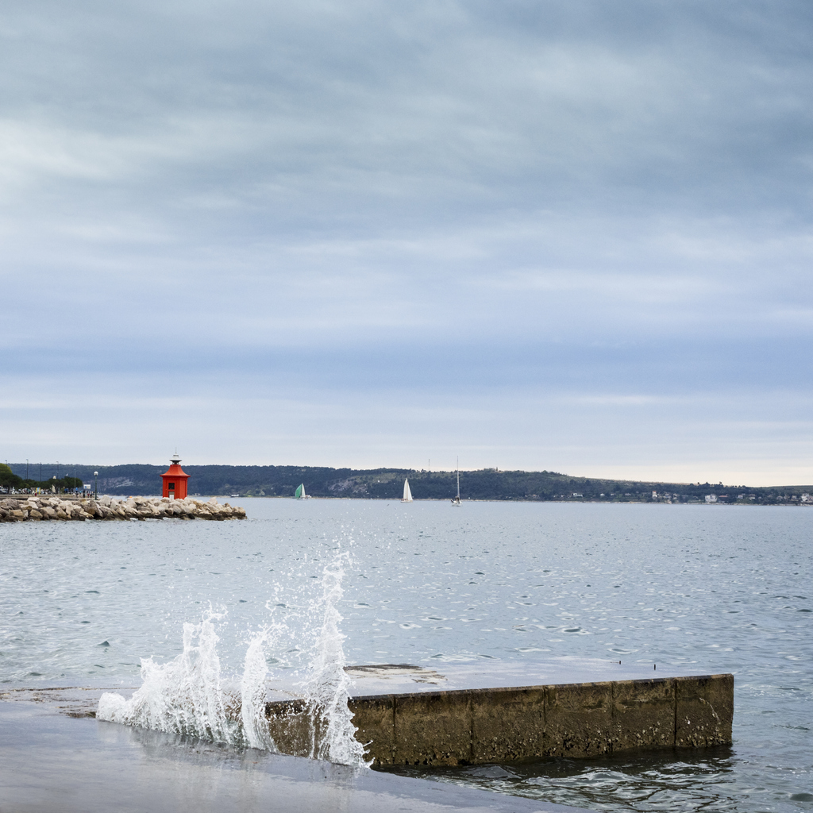
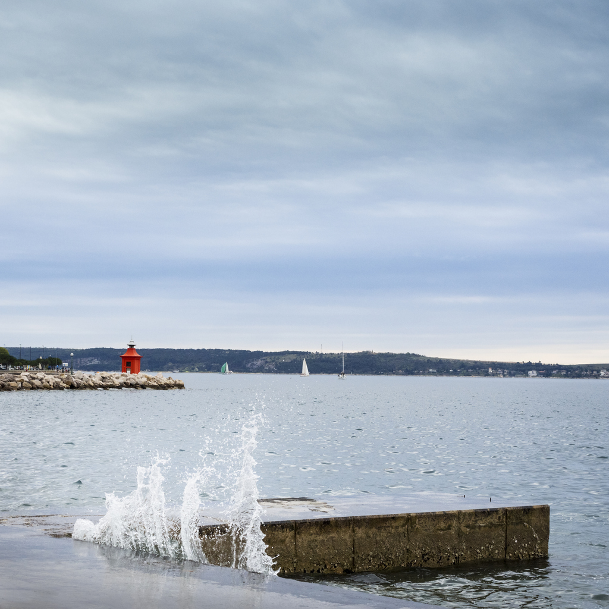

Zanimivosti
Piran je slikovito obmorsko mesto, ki se nahaja ob južnem delu Slovenske obale. Znanih je njegovo bogato zgodovinsko ozadje, ki sega vse do rimskega obdobja.
Srednjeveški arhitekturni slog je močno zaznamoval Piran, saj je mesto ohranilo svoj starodavni videz. Ozke tlakovane ulice, visoki kamniti zidovi in stolpi ter čudovite trge ustvarjajo pravljico, ki privablja obiskovalce iz vsega sveta.
Glavno znamenitost Pirana predstavlja Stolnica sv. Jurija, imenovana tudi Piranska katedrala. Ta čudovita cerkev je ena najbolj prepoznavnih arhitekturnih draguljev na slovenski obali.
Ob vznožju Piranskega polotoka se nahaja Tartinijev trg, ki je poimenovan po slavnem skladatelju Giuseppeju Tartiniju, rojenem v Piranu. Ta trg je središče mestnega dogajanja, obdan z restavracijami, kavarnami in trgovinami.
Mesto je znano tudi po solinah, ki se nahajajo v bližini. Soline so bila pomemben vir soli že v preteklosti in danes predstavljajo kulturno dediščino ter privlačno turistično točko.
Galerija
 


Andriy Gryban © Informatika